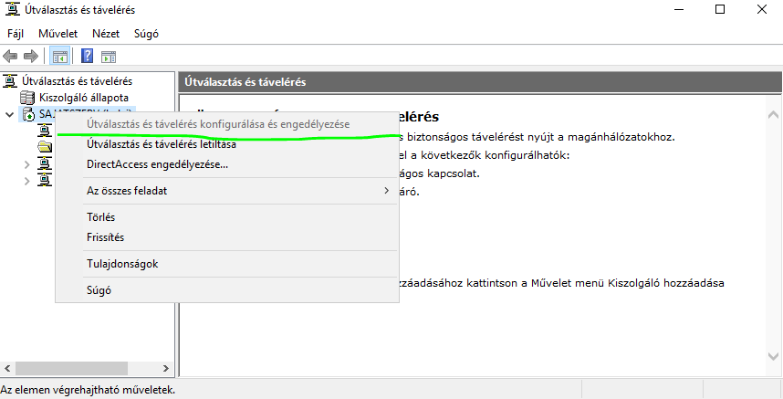
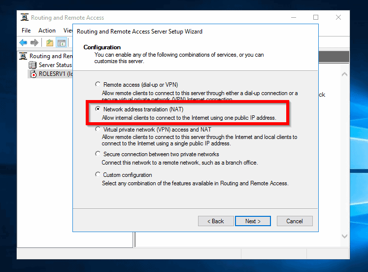
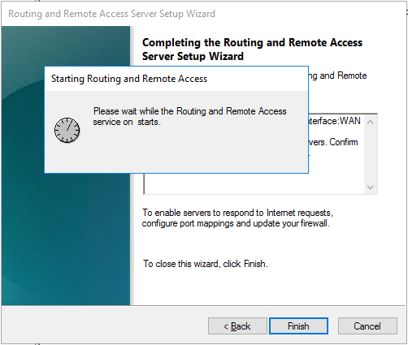
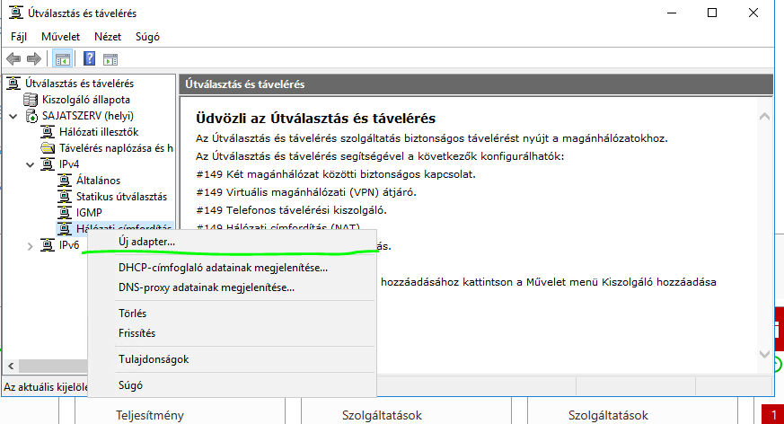

Útválasztás és távelérés engedélyezése
Válasszuk ki a hálózati címfordítás-t (NAT).
Válasszuk ki azt az adaptert a szerverben amire szeretnénk kifordítani a belső címtartományt.
Várjuk meg amíg működésbe lép a szolgáltatás
Ha igényli a hálózat a következő képpen adható új adapter aminek a címtartományát fordítja az internet felé:
Ez után válasszuk ki az adaptert amiről szeretnénk még címtartományt fordítani